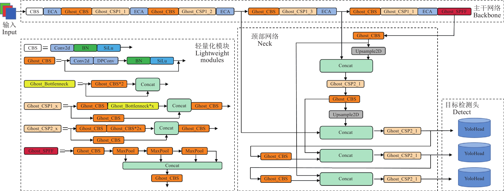

OrbitGuard: 面向航天遥感目标检测模型的可靠性评估与漏洞对抗系统
YOLO 模型流程图

下载 yolov8.pt 文件：
对抗样本攻击检测算法，通过在原始图像中添加微小的扰动，生成能够欺骗深度学习模型的对抗样本。
测试算法的创新点：采用梯度引导的扰动生成方法，能够在保持视觉不可察觉的前提下，有效降低目标检测模型的准确率。
模型参数位翻转攻击检测，通过翻转神经网络权重参数的特定位，模拟硬件故障对模型推理的影响。
测试算法的创新点：基于重要性评分的位翻转策略，能够精确定位对模型性能影响最大的关键参数位置。
推理时间延迟攻击检测，通过注入计算复杂度高的恶意样本，导致模型推理时间显著增加。
测试算法的创新点：结合时间复杂度分析和资源消耗监控，能够识别并量化推理延迟攻击的严重程度。